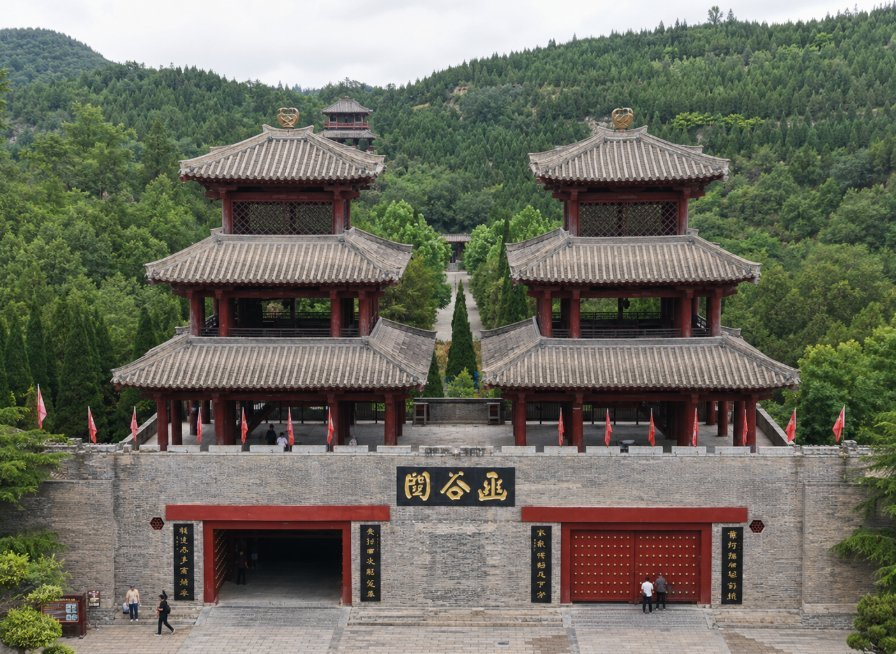
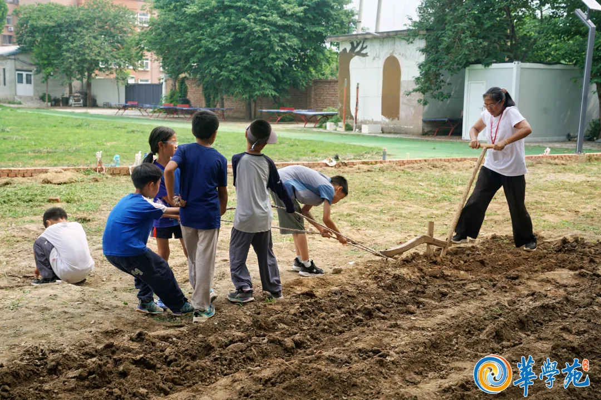
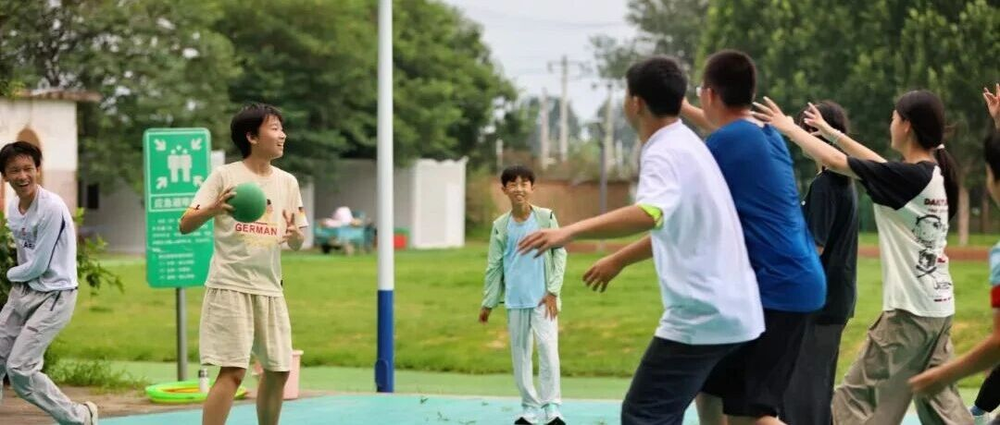

课程、秩序、安全，主要围绕可控
孩子被照看，时间被安排，老师负责上课，课后关系较少延伸。家长得到的是"被管理过的一段假期"。
暑假华学苑不是把课程排满的托管营，而是28天住宿制真实共同生活：起床、洗衣、打扫、排戏、运动、争执、和好，都成为成长本身。
我们不希望把孩子当作"名额"。问卷、面谈、付款，不是为了筛选谁更好，而是先确认：28天共同生活，真的适合这个孩子吗？
你第一反应如果是"又是个把课排满、安全托管的地方"，这太正常了。但暑假华学苑从设计到落地，做的不是同一件事。
孩子被照看，时间被安排，老师负责上课，课后关系较少延伸。家长得到的是"被管理过的一段假期"。
主班老师、生活老师、课程老师在不同场景里看见孩子。不是盯任务完成，而是看见一个完整的人。
7天体验一下，14天浅尝辄止。只有28天，孩子的变化才可能从适应环境、露出真身、真实碰撞，走到被自己和家庭共同确认。
孩子还在"演"，先适应环境、规则和老师，生活被接住，身体慢慢落下来。
安全感上来后，情绪、退缩、好奇、主动性开始露出来。
真实关系开始碰撞，老师不急着压下去，而是陪孩子处理。
戏剧公演、家庭汇合和共同见证，把经历压成一颗回家的种子。
从适应到碰撞、从碰撞到确认——这不是课表，而是孩子在真实生活里走完整段路才能变化的自然节律。
先适应环境、规则和老师。生活被接住，身体慢慢落下来。这时候的孩子还在观察和试探。
安全感上来后，情绪、退缩、好奇、主动性开始露出来。老师不急着评价，先让真实的他出现。
真实关系开始碰撞。老师不急着压下去，而是陪孩子处理——冲突本身也是成长的一部分。
戏剧公演、家庭汇合和共同见证，把经历压成一颗回家的种子。不急着总结，先让感受留下来。
电子产品统一收纳，固定时段开放。边界清晰，但老师更看重的是孩子是否能从生活中重新长出自律。



孩子不是被"放养"，也不是被课表压满。生活、课程、劳动、村庄时光和睡眠节律，都在一天里展开。
终南山脚下的清晨，自然唤醒。
易筋经、爬山、游戏运动。
养正、天行、行知、远志四大学部展开学习旅程。
自己打饭、洗碗、打扫。
自由活动、足球、手工、棋牌和混龄协作。
很多青春期孩子第一次在这个点自然入睡。
养正、天行、行知、远志，不只是年龄分层，也是在不同阶段回应孩子的身体、情感、行动和精神方向。
衣食住行、自然徒步、中医感知，先把生活接住。
《论语》与精神坐标，不是背诵，是在人生处境里体会选择。
在做事、讨论、表达和共创中，把学习变成探索。
把更大的世界带进来，支持孩子建立方向和承担。
把适合与不适合说清楚，比只强调"报名"更能建立信任。
每个故事都来自真实家长回访。有进步，也有反复。正因为不完美，才可信。
孩子回家后自己设置使用时间，超时后第二天主动不带手机出门。
从不动手到主动扫地、洗碗、拖地，家长第一次看到孩子在家里站起来。
从遇到难处就躲开，到主动组织表演、找配乐、定服装。
导师团队来自全人教育、心理支持、音乐、木工、中医、体育、戏剧和项目运营等方向。
主班老师，长期参与暑假华学苑与家庭华学苑。
主班老师，擅长故事、吟诵与经典学习。
《生命成长力》作者，长期研发天使在线和华学苑实践。
天使在线创办人之一，线下工作坊与亲子营支持老师。
把家长承接放到报名前讲清楚，能减少"送去就变好"的不切实际期待。
先理解变化怎么发生，开营前就开始承接。
家长不在营地，但知道孩子正在经历什么。
老师和家长沟通孩子的变化、短期效应与家庭继续支持。
把家长最担心的问题说清楚：时间、手机、住宿、想家、学习、费用与家长参与。
不是长，是只有28天，变化才能被带回家。前两周孩子在放松和感受，第三周才敢真实碰撞，第四周才能确认。
不是简单禁止手机，而是在28天里让孩子重新进入真实生活：运动、同伴、劳动、手工、戏剧、音乐、自然和共同生活。
想家本身不是问题。老师会在生活和关系里支持孩子逐步安定，也会按规则与家长沟通。
先通过问卷和面谈，一起判断是否适合进入28天共同生活。付款不是报名起点。
集体住宿，条件相对朴素。但这种一起睡大通铺的经历，反而会长出像战友一样的情谊。
28 天营费含食宿、课程、活动与保险，具体金额因营期分组有所不同。报名前小助手会提供完整费用说明（含退款条款与医疗授权），所有信息在报名前确认清楚，不后置。
问卷、面谈、付款，不是为了筛选谁更好，而是先确认：28天共同生活，真的适合这个孩子吗？
了解理念、规则和边界。
新生、老生分别填写对应问卷。
了解孩子状态、家庭期待与适配度。
确认报名并进入入营准备。
咨询电话：15829900194 · 微信：tianshizaixian68